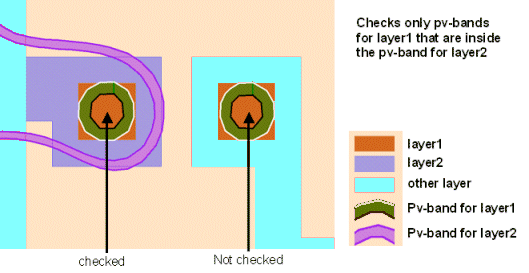

MinAreaOverlapCheck
-layer1 layer1_name
-layer2 layer2_name
-subwindow expr_number
-minOverlapArea area_size
[-minLFDfilter filter]
-areaType {absolute | relative}
[-security {no | yes}]
[-markerLayer layer_name
[-referenceLayer1 “%drawn” | “%retarget” | layer_name]
[-referenceLayer2 “%drawn” | “%retarget” | layer_name]
[-anchorLayer1 “%reference” | “%drawn” | “%retarget” | layer_name]
[-anchorLayer2 “%reference” | “%drawn” | “%retarget” | layer_name]
[-layer1ContourCondition contour_condition1]
[-layer2ContourCondition contour_condition2]
[-maxExtent extent_size]
[-priority cPriority]
[-checkName cName]
[-comment comment_text]
[-classify handle]
[-appendMarker extra_markers_layer]
[-contour1Handle contour1_handle -contour2Handle contour2_handle]
{-database db_name | -layerOut return_layer_name
| -database db_name -layerOut return_layer_name}
MinAreaOverlapCheck
-layer1 layer1_name
-layer2 layer2_name
-pdkCheckName check_template
-database db_name
[additional_options]
Performs an overlap check on PV-band geometries in areas where target layer1_name overlaps target layer2_name. If -markerLayer is specified, the check is limited to PV-band data that lies inside geometries on the -markerLayer. This check flags violations only on the PV-band data for layer1_name. Violations represent areas on the PV-band that overlap PV-band data for layer2_name by-minOverlapArea or less.
This check is used to identify problems with resistance.
MinAreaOverlapCheck (MAOC) checks the area bounded by inside edge of a PV-band. You can write this check either in terms of absolute overlap areas or in terms of the PV-band overlap relative to the target layer overlap.
This function writes all errors discovered by the check to the Calibre nmDRC RDB. It also associates a score to each error and writes it to the Check Database specified by the -database argument. The score is calculated as the area of the model-based violation.
If used with a PDK, this function calls a MinAreaOverlapCheck defined in the PDK and runs it for the specified layers, writing check results to the specified database.
Required keyword and argument defining the name of the first design layer you are checking. This is the layer for which PV-bands are generated.
Required keyword and argument defining an additional design layer, with respect to which layer1_name is checked. This is another layer for which PV-bands are generated. This function evaluates those areas where layer1_name overlaps layer2_name.

Required keyword and argument defining the process variation experiment to which this check applies. You must reference individual process variation experiments by their positions in the -opticalSpanList and -doseSpanList arguments to the PVband command used to generate the PV-band data being checked. Thus, expr_number refers to an index to a list of experiments. This value is used with both layer1_name and layer2_name. For example, if expr_number = 3, the check evaluates the PV-band for layer1_name, experiment 3 against the PV-band for layer2_name, experiment 3.
Setting expr_number to a value of “expr_number_shift” causes the check to operate on a certain shift for a double-patterned PV-band with overlay (for example, -subwindow 1_N causes the check to only run on the north shift).
Required keyword and argument defining the minimum size of overlap area to check for. You must take -areaType into consideration when choosing the value for area_size.
Optional keyword and value used to filter out geometries that are non-resolving. If the area bounded by inside edge of a PV-band for layer1_name is <= filter, that polygon is ignored by the check. The filter is expressed in square microns.
Required keyword and argument defining how area is calculated:
absolute — The actual size of the overlap, expressed as microns square.
relative — The size of the overlap relative to the area being examined, calculated as the ratio of <size of PV-band overlap>/<design layer overlap>.
Overlap is calculated based on the inner edge of the PV-bands. Output properties are Area and AreaRatio.
Optional argument defining security privileges. If set to “yes”, the setup file is encrypted in the transcript.
Optional keyword and argument used to constrain the check to those contours that lie within polygons on layer_name. The function ignores areas outside polygons on the layer.
A -layerOut layer or a derivation of a -layerOut layer should not be used as the input to ‑markerLayer, or a circular layer definition results.
Optional keyword and argument to have the check measurements calculated on a different layer than the first drawn layer to the checks for which the PV-bands have been generated.
You can provide one of the following options as an input to this argument:
“%drawn” — Default. The check measurements are calculated with respect to the drawn layer input to the check with -layer1.
“%retarget” — The check measurements are calculated with respect to the retarget layer of the input drawn layer of the check. The check stores the retarget layer name in the PDK.
layer_name — You can define any layer name to have the check measurements done with respect to it. This argument can be used when no PDK is used, and you know the name of the retarget layer.
Optional keyword and argument to have the check measurements calculated on a different layer than the second drawn layer to the checks for which the PV-bands have been generated.
You can provide one of the following options as an input to this argument:
“%drawn” — Default. The check measurements are calculated with respect to the drawn layer input to the check with -layer2.
“%retarget” — The check measurements are calculated with respect to the retarget layer of the input drawn layer of the check. The check stores the retarget layer name in the PDK.
layer_name — You can define any layer name to have the check measurements done with respect to it. This argument can be used when no PDK is used, and you know the name of the retarget layer.
Optional keyword and argument to have the output error markers from the checks anchored on a different layer than the first drawn layer of the checks, and different from the reference layer input to the check.
You can provide one of the following options as an input to this argument:
“%reference” — Default. The output error markers are anchored to the layer input to -referenceLayer1.
“%drawn” — The output error markers of the check are anchored to the drawn layer input to the check with -layer1.
“%retarget” — The output error markers of the check are anchored to the retarget layer of the input drawn layer of the check. The check stores the retarget layer name in the PDK.
layer_name — You can define any layer name to have the output error markers anchored to it. This argument can be used when no PDK is used, and you know the name of the retarget layer.
Optional keyword and argument to have the output error markers from the checks anchored on a different layer than the second drawn layer of the checks, and different from the reference layer input to the check.
You can provide one of the following options as an input to this argument:
“%reference” — Default. The output error markers are anchored to the layer input to -referenceLayer2.
“%drawn” — The output error markers of the check are anchored to the drawn layer input to the check with -layer2.
“%retarget” — The output error markers of the check are anchored to the retarget layer of the input drawn layer of the check. The check stores the retarget layer name in the PDK.
layer_name — You can define any layer name to have the output error markers anchored to it. This argument can be used when no PDK is used, and you know the name of the retarget layer.
Optional keyword and argument to define -layer1 check on any defined contour condition in the PV-band, as opposed to only on the inner or outer PV-band contours.
You can provide one of the following options as an input to this argument:
min — Specifies the command works on the inner PV-band contour.
max — Specifies the command works on the outer PV-band contour.
integer — This integer is the order of the experiment in the subwindow. In the LFD::PVband command, by default subwindows are assumed to be constructed as extensions to previously-created subwindows, so the order of experiments is counted from the first subwindow. If the LFD::PVband -independentWindows option is set, the order of experiments is only counted in the defined subwindow.
process condition list — This must be an ordered list, with 3, 4, 5, 6, 8, or 10 elements defining an explicit process condition. The list must be supplied as follows:
{optical1 dose1 size1 [resist1 etch1] [optical2 dose2 size2 [resist2 etch2]]}
These values must define a process condition (dose and focus settings) that is one of the conditions evaluated by the LFD::PVband or LFD::RegisterContour commands for the layer.
Optional keyword and argument to define -layer2 check on any defined contour condition in the PV-band, as opposed to only on the inner or outer PV-band contours.
You can provide one of the following options as an input to this argument:
min — Specifies the command works on the inner PV-band contour.
max — Specifies the command works on the outer PV-band contour.
integer — This integer is the order of the experiment in the subwindow. In the LFD::PVband command, by default subwindows are assumed to be constructed as extensions to previously-created subwindows, so the order of experiments is counted from the first subwindow. If the LFD::PVband -independentWindows option is set, the order of experiments is only counted in the defined subwindow.
process condition list — This must be an ordered list, with 3, 4, 5, 6, 8, or 10 elements defining an explicit process condition. The list must be supplied as follows:
{optical1 dose1 size1 [resist1 etch1] [optical2 dose2 size2 [resist2 etch2]]}
These values must define a process condition (dose and focus settings) that is one of the conditions evaluated by the LFD::PVband or LFD::RegisterContour commands for the layer.
This switch is useful when variations between layers are well-controlled, and you are interested in considering process variations of one layer over the nominal behavior of another.
Optional keyword and argument used to modify the Calibre OPCverify tool’s max_extent value option to the area_compute control inside of a package. The default extent_size is 3.0 microns. This is useful as the large default max_extent value can affect Calibre LFD performance.
Optional keyword and argument specifying the name to use for the check in the RDB. If not specified, the check in the RDB is assigned a system-generated name as defined in Table 1. Use this keyword to avoid name collisions when performing multiple checks of this type.
Optional keyword and argument specifying a priority for this check. If not specified, the check in the RDB is assigned a system-generated priority based on the -subwindow value and default ranking of 2, as defined in Table 2. cPriority must be an integer value.
Optional keyword and argument used with -database for defining the comment text to be reported in the RDB if the check encounters a violation of this type. If not specified, the comment for a MAOC violation is “Minimum Overlap Area Violation: Improve symmetry of overlap layers. Increase common overlap area. Avoid low aspect ratio figures.”
The comment_text must be a single string, so comments containing spaces must be enclosed in braces. For example:
-comment {This is my comment.} Optional keyword and argument used to define a handle to point to an LFD::ClassifyConfig object.
Optional keyword and argument used to add the polygons in the extra_markers_layer layer to the output of the check. The output retains the properties on the extra_markers_layer layer supported by the check. This option is not allowed for checks that are tied to an LFD::StructureOptimizer.
Optional keyword and argument specifying the name of the first layer used to perform Calibre LFD checks on specific contour handles. This option is for use with the contour handle generated using the Customizable PV-Bands flow.
Optional keyword and argument specifying the name of the second layer used to perform Calibre LFD checks on specific contour handles. This option is for use with the contour handle generated using the Customizable PV-Bands flow.
Required keyword and argument defining the RDB to which spacing values for violations identified by the check are written. You must indicate where the violations are written by specifying -database or -layerOut or both.
Required keyword and argument defining the name of a derived layer to which the violations identified by the check are written. This layer exists in memory and can be referenced in subsequent Calibre nmDRC operations. You must indicate where the violations are written by specifying -database or -layerOut or both.
A -layerOut layer or a derivation of a -layerOut layer should not be used as the input to ‑markerLayer, or a circular layer definition results.
Required keyword and argument specifying the name of the check template defining how the check is performed.
Optional keywords and arguments allowed only when the security settings within the PDK permit you to modify the settings for this command. These can be any of the options for the non-PDK MinAreaOverlapCheck command. Any additional options specified overrides the options defined within the PDK.
Verify that all contacts overlap at least 0.003 micron square with the poly layer across all the conditions specified by subwindow 1:
LFD::MinAreaOverlapCheck -layer1 contact -layer2 poly -subwindow 1 \
-minOverlapArea 0.003 -areaType absolute \
-database minAreaOverlapCheck.rdb